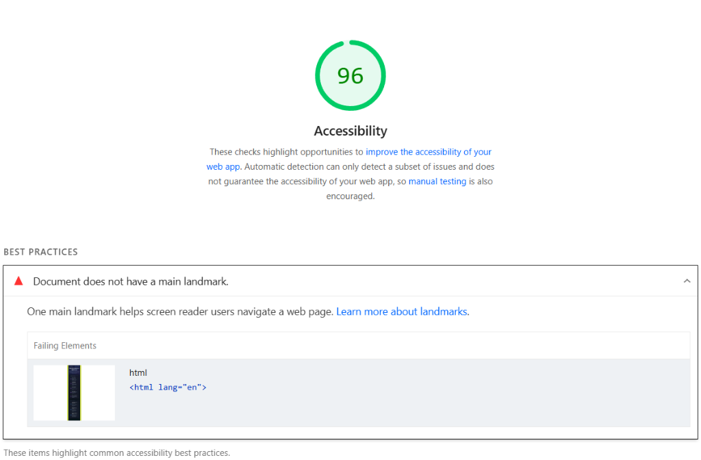

Comprehensive audit of the Week 9_1 web application using Google Lighthouse. Identified accessibility barriers, implemented WCAG-compliant HTML5/ARIA remediations, and improved the score.

Run Lighthouse on deployed page
Save your after screenshot as lighthouse-after.png to display here.
Problem: The document used a generic <div class="main-container"> without a semantic landmark. Assistive technologies (screen readers) rely on landmarks to let users jump directly to primary content, causing Lighthouse to flag: "Document does not have a main landmark".
Fix: Replaced the outer <div> with a semantic <main class="main-container" id="main-content">.
<!-- ❌ No semantic landmark -->
<div class="main-container">
<div class="content-grid">
...
</div>
</div><!-- ✅ Primary landmark target -->
<main class="main-container" id="main-content">
<div class="content-grid">
...
</div>
</main>
Problem: The header navigation bar used a generic <div> and its back-arrow SVG was unlabelled, causing screen readers to attempt to announce raw polygon paths.
Fix: Changed the container to <nav class="topbar" aria-label="Course Navigation"> and added aria-hidden="true" to the decorative return icon.
<div class="topbar">
<a href="../../index.html" class="back-link">
<svg ...><path .../></svg>
Course Hub
</a>
</div><nav class="topbar" aria-label="Course Navigation">
<a href="../../index.html" class="back-link">
<svg aria-hidden="true" ...>...</svg>
Course Hub
</a>
</nav>
Problem: Both lecture topics and practice exercises used <div class="section-card"> with <div class="section-title">. Screen reader users navigate via heading levels (<h1> → <h2>); without <h2>, document outlines are flattened.
Fix: Converted containers to <section aria-labelledby="..."> and section titles to semantic <h2> elements with aria-hidden="true" on chevron arrows.
<div class="section-card">
<div class="section-title">
Lecture Topics
</div>
...
</div><section class="section-card" aria-labelledby="topics-heading">
<h2 class="section-title" id="topics-heading">
Lecture Topics
</h2>
...
</section>
Problem: Keyboard-only users had to tab through the top navigation every time before reaching page content, and low-contrast dim text (#64748b) had borderline contrast.
Fix: Added a hidden-until-focused <a href="#main-content" class="skip-link">Skip to main content</a> and increased contrast to #94a3b8 (> 6.8:1 ratio).
<body>
<div class="topbar">
...
</div>
</body><body>
<a href="#main-content" class="skip-link">
Skip to main content
</a>
<nav class="topbar" ...>...</nav>
</body>